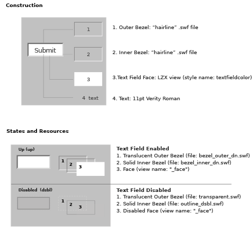

example
LZX Reference
filename: edittext.lzx
The default edit text field has a height of 22 pixels and a width of 106 pixels. The field is comprised of scalable vector resources which enable disproportional resizing without distortion. Resizing the edit text field will not alter the text.
Edit Text is constructed of four views:
1. The "Outer Bezel" creates an indented area around the field
2. The "Inner Bezel" defines the recess of the field
3. The "Face" is the background and center of the field
4. The "Text" view which is contained in an input text field
Each of the first three views contains multiple resource frames which change based on the state of the button.
The outer and inner bezels (and each of their states) are constructed of a "hairline" .swf file with two different colored strokes on each rectangle. These files were built using the Flash authoring tool, and take advantage of a feature of the .swf file format that is not supported in other vector-based programs (such as Illustrator). "Hairlines" created in Flash will retain their weight regardless of scaling*. This means that using a size other than the default will not distort the look.
The face is an LZX view with a background color (bgcolor). The opacity and bgcolor change between enabled and disabled states.

*An unfortunate effect of this technique is that a hairline stroke only retains its width when decreasing scale. Scaling a hairline up will scale the thickness of the stroke. In an effort to work around this, the assets for both outer and inner bezels (and their states) are set at the overly large size of 500x500 pixels.